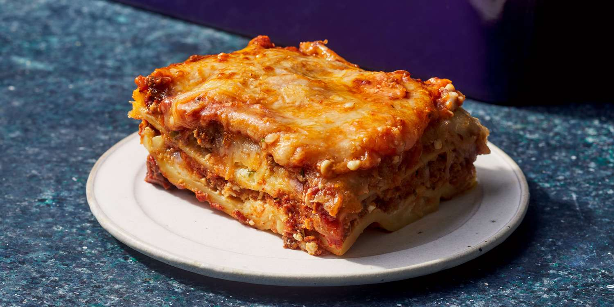

Lasagna
Home

Delicious Homemade Lasagna
This is my mom's special homemade lasagna recipe with a meaty, made-from-scratch,
tomato sauce and a deliciously cheesy filling. A more traditional homemade lasagna
filling would be made with ricotta but my mom's recipe calls for a blend of
small-curd cottage cheese and Parmesan.
I have found none better anywhere. Serve with a leafy green salad and
crusty garlic bread.
Homemade lasagna isn't as hard to make as it seems. Don't be intimidated by all the
layers of delicious italian flavour - try this homemade lasagna recipe today!
Homemade Lasagna Ingredients
- Meat: 1:1 Ground pork and ground lean beef
- Onion: Diced whole onion
- Canned Tomatoes: One can tomato sauce, one can crushed tomatoes
- Fresh Herbs: Two tablespoons of parsley, chopped, and one clove of garlic, crushed
- Sugar: One Dash
- Spices and Seasonings: Dried Basil, dried oregano, salt, black pepper
- Lasagna Pasta Sheets: Uncooked or oven-ready
- Cheese: Cottage, Parmesan, shredded mozzarella
- Eggs
How to Make Homemade Lasagna
- Cook the meat: Cook the ground meat in a skillet until browned and crumbly. Add the onion and continue cooking until it's translucent. Stir in the canned tomato products, half of the parsley, garlic, basil, 1.5 teaspoons of salt, oregano, and sugar.
- Cook the Lasagna Sheets: Boil the lasagna sheets in lightly salted water until they're al dente.
- Make the cheese layer: Mix cottage cheese, Parmesan cheese, eggs, the remaining parsley, the remaining salt, and pepper in a bowl.
- Assemble the lasagna: Layer the ingredients according to the recipe (starting with sauce and ending with mozzarella) until the lasagna is assembled.
- Bake the lasagna: Cover with foil and bake in the preheated oven for about half an hour. Remove the foil and continue baking until the top is golden brown.